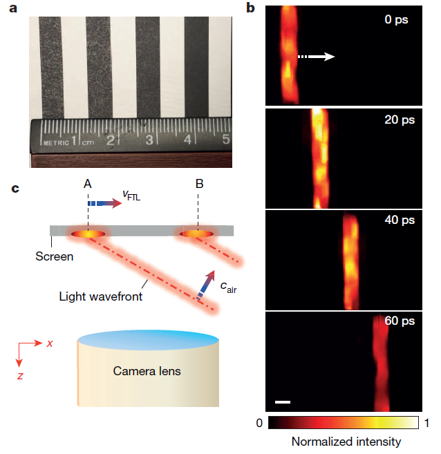

原理：
这是一种引火装置，在其中放入小片的引火物，并快速地压下活塞即可引燃。这可以看作是气体绝热压缩的过程，绝热过程满足的公式是 $TV^{\gamma -1}=$常数，其中空气的比热容比 $\gamma\approx 1.4$ ，如果将空气的体积压缩为 $\frac15$ ，则绝对温度会升高到原来的 2 倍左右，换算回来即 300 ℃，能够点燃很多常见易燃物（例如做演示实验常用的乙醚的自燃温度为 160℃）。
展开 Mathematica 代码
{% highlight mma %}
5^0.4 // N
= 1.90365
{% endhighlight %}
花絮：
点燃之后要迅速把活塞抽出，以免火种因为氧气耗尽而熄灭。
危险：
打火活塞常用的火种是炭布（char cloth）、桦茸（Chaga，不知道翻译的对不对…），不要用火棉（gun cotton）或气体燃料作火种，活塞会被猛喷出来。
{% include header.html param="不是穿越了吗？" %}

原理：
两个装满去离子水的烧杯
在接吻彼此接触，如果此时给它们加上数千伏的电势差，那么即使把两个烧杯拉开几厘米距离，它们之间也依然会有一条“水桥”相连。这一现象的具体原理还有待研究，目前普遍认为是和表层液体发生极化有关。
花絮：
诶？这个不也是电解水的实验装置吗？不是的哦…还记得电解水的实验需要加入溶质增强导电性吗？而这个实验要求水非常纯净，如果水中溶入了离子，“水桥”的稳定性会变差很多。
危险：
请勿在家中玩耍高压电君…
{% include header.html param="不是流体吗？" %}

原理：
玉米淀粉水溶液是一种具有胀流性（dilatant）的非牛顿流体，缓缓施力时它表现得像液体，而瞬间施力则会表现得像固体。你可以把流体颗粒想象成一团面粉，当你把面粉抓起来的时候，面粉会缓缓从指缝流走，此时颗粒是分散的，呈现液体的特性。而当你一拳打在面粉上时，颗粒会互相挤压而使阻力增大，呈现固体的特性。
花絮：
《生活大爆炸》第 2 季第 3 集中，Geek 们就是把玉米粉溶液放在低音喇叭上看它跳舞～
危险：
（本段涉嫌剧透…）
《名侦探柯南》漫画第 912 话中，凶手的作案手法就是在温泉里倒入大量葛粉，利用胀流性现象在水上奔跑抄近路去杀人…
{% include header.html param="不是悬浮吗？" %}

原理：
高声强的声波具有非线性效应，这一效应可对声场中的物体产生压差，将轻小物体悬浮在声波驻波的波节附近。上图中的这次实验在上下左右都设置了超声波相控阵列，从而实现了对物体的三维移动。
花絮：
在原视频中，来自日本的研究者们还用这种装置悬浮了钉子君，螺母君，火柴君，电阻君，二极管君，肥皂泡君…够啦快放人家下来！
危险：
然而这项技术目前还不能用于悬浮人，如果让声场强度达到能悬浮人的级别，人的身体会爆炸或严重内出血…
{% include header.html param="不是失重吗？" %}

原理：
液体的压强来源于液体所受的重力，失重状态下液体不再对瓶壁产生压力，因此会观察到水柱不再从侧面喷出。
花絮：
当然偶还可以把这个事情解释得更高大上一些：根据广义相对论的等效原理，惯性力场与引力场的动力学效应是局部不可分辨的，在瓶子自由下落的参考系中，惯性力消除了瓶子所处局部时空范围内的引力作用，这个瓶子此时已经看不见引力场的存在了。
危险：
别被瓶子砸到…
{% include header.html param="不是光速吗？" %}

原理：
2014 年 12 月 4 日的《自然》杂志以封面文章
↗刊登了目前世界上最快的只接收（receive-only）2D 超高速摄像机：1000 亿帧/秒，即 10 皮秒一帧（作为参考，真空中的光在 10 皮秒内走过的距离约为 3 毫米）。上图就是通过这种摄像机拍摄的激光脉冲被镜面反射的过程，整个过程只经历了 300 皮秒。
补充：很多人问光是怎么能被观察到的：实验者在装置中放了块干冰，在空气中制造出蒸气，我们看见的是散射光。
展开 Mathematica 代码
{% highlight mma %}
299792458*0.1*10^-9
= 0.0299792
{% endhighlight %}
花絮：
在这篇论文中，研究者们还用这个技术演示了一个伪超光速实验：一排光波像海浪一样斜着拍到屏幕上，则光斑是以超光速扫过屏幕的。然而
并没有什么卵用…这类光斑或影子都是无法超光速地传递信息的。

危险：
能够追上光速的摄像技术将再次推进基础物理学的研究，可能招致某地外文明的扑灭。
{% include header.html param="不是超光速吗？" %}

原理：
介质中的光速是小于真空中光速的，因此它完全可以被其他高速运动的粒子超越。类似于超音速时会产生激波，当带电粒子的速度超过介质中的光速时，就会在运动路径两侧产生切伦科夫辐射。这种辐射的能量主要在紫外波段，人眼可以观察到的部分通常呈现蓝紫色的辉光。
花絮：
宇宙空间中的某些高能粒子的运动速度可接近光速，因此在进入地球大气层时也会产生这种辐射。这种蓝紫色的闪光仅持续数纳秒，亮度只有夜空背景的万分之一…依然能被切伦科夫望远镜的超快光电传感器捕捉到～
危险：
如果切伦科夫辐射的光芒肉眼可见…赶紧问问你附近是不是有某个高能放射源…